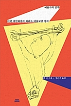

39
동시에 저는 예술사와 예술 이론이 창작을 하는 예술가에게 무척 가치있는 것이라고 생각합니다. 그러한 온갖 학문 자료는 예술에 깊이와 절묘함을 더해 주고, 예술가 대부분에게 분명 자극제가 됩니다. 다만 예술을 말로 설명하거나 가르치는 과정에서 독창적인 창작의 필요성이 제거된다면 그때는 예술의 이론이나 역사가 예술가의 숨통을 조이기 쉽습니다.
41
학문은 아마도 인간의 가장 보람된 직업이겠지만, 그 창의적인 원천이 말라붙은 학문은 결국에 불합리로 귀착하는 바 자가당착에 빠지고 맙니다.
42
대학 안에서 예술가가 성공적으로 기능하는것을 방해하는 세번째 주요 장벽은 예술가란 어떤사람인가에 관한 다소 낭만적인 오해입니다. 여전히 최면에 걸려 있는 근엄한 학계 사람은 예술가를 괴짜 천재로 간주합니다. 이 부류는 예술가가 자기도 왜 그림을 그리는지를 모르며 그저 그려야 하니까 그린다고 믿어요. 그리고 제가 보기에 대중도 이런 생각에 찬동하는 것 같습니다.
47
소위 천재란 온갖 세부가 어지럽게 뒤섞여 있는 가운데서 어떤 패턴을 보통 사람보다 조금 더 빨리 포착해 내는 사람일 뿐입니다. 따라서 (여기서도 '소위'를 덧붙여야겠지만) ㅊ너재는 평범한 것에서 그런 패턴을, 보다 큰 의미를 간파하지 못하는 사람을 못 견뎌 할 가능성이 높은 것이죠.
95
그림 그리기는 화가와 그림의 친밀한 소통 과정이자 밀고 당기는 대화이며, 그림은 화가로부터 형상과 형태를 부여받는 순간에도 화가에게 할 말을 합니다.
96
저로서는 작품에서 아이디어가 모습을 드러내지 않는 그림이라면 그릴 이유가 별로 없었습니다.
122
예술에서 추상은 어떤 본질을 그 주변의 관련 요소로부터 분리해 내는 것이지요. 예술가는 대상을 원근법에서 해방시킴으로써, 또는 디테일에서 해방시키으로써 대상의 본질적인 형식을 추상화합니다. 가령 재즈라는 아이디어 혹은 내용을 그림으로 해석하기 위해 화가는 여러 형상과 악기가 뒤죽박죽 섞인 가운데에서 스타카토 리듬과 요란하게 울리는 소리만을 뽑아낼 수 있습니다.
210
예술가가 갖춰야 할 기본 조건으로 크게 세 가지를 들 수 있겠습니다. 첫째 교양 있는 사람이 될 것, 둘째 교육받은 사람이 될 것, 셋째 통합적인 사람이 될 것. 단어 선택이 자의적이라는 점을 우선 인정해야겠습니다. 대략 같은 의미로 통할 수 있는 다른 단어도 많을 거에요. 그럼에도 다소 어색한 이 용어들을 선택한 이유는 앞으로 이야기를 해 나가면서 차차 밝혀지리라 기대합니다.
211
여건이 된다면 대학을 다니세요. 여러분이 나중에 하고 싶은 일과 무관한 내용의 지식이라는 건 없습니다 .하지만 대학에 가기 전에 잠깐 일을 해 보세요. 무슨 일이든 좋습니다.
대학 안에서나 밖에서나 뭐든지 읽으세요. 그리고 자기 의견을 만들어야 해요! 소포클레스와 에우리피데스와 단테와 프루스트를 읽으세요. 예술에 관한 내용이라면 구할 수 있는 건 뭐든지 읽으세요. 작품 리뷰만 빼고요.
성서를 읽고, 흄을 읽고, 포고를 읽으세요. 모든 종류의 시를 읽고 많은 시인과 많은 예술가를 알아 가세요. 예술 학교에 다니세요. 필요하면 두 군데, 세 군데를 가도 좋고 야간 수업을 들어도 괜찮아요. 그러면서 그림을 그리고 또 그리세요. 드로잉을 하고 또 하세요. 학교에서 배우는 것이든 아니든 가능한 모든 것을 익히세요. 수학과 물리와 경제와 논리, 특히 역사를 알아야 합니다.
모국어 외에 적어도 두 개의 언어를 배우세요. 프랑스어는 어쨌든 아는 것이 좋습니다. 그림을 감상하고, 더 많은 그림을 감상하세요. 모든 종류의 시각적 상징을, 온갖 엠블럼을 눈여겨보세요. 간판이든 가구 그림이든 이런 양식의 미술이든 저련 양식의 미술이든 하찮게 보지 마세요. 그림을 진심으로 좋아하거나 진심으로 싫어하기를 두려워하지 마세요. 그렇지만 싫어도 열린 마음을 가져야 합니다.
214
온갖 종류의 미술관과 갤러리에 가고 작가의 스튜디오를 방문하세요.
능력이 닿는 데까지 미술을 모두 섭렵하는 거예요. 그리고 무슨 수를 써서라도 자기 의견을 가지세요. 예술에 삶에 정치를 휘말리게 되는 것을 결코 두려워하지 마세요. 지금보다 더 잘 그리는 법을 배우기를 절대 주저하지 마세요. 그리고 어떤 종류의 작업이든, 고귀하는 평범하든, 하는 걸 절대로 겁내지 마세요. 단, 남과 다르게 해야 합니다.